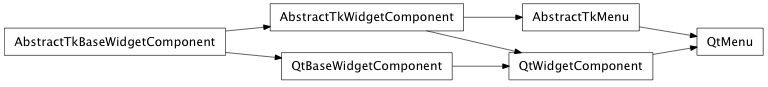
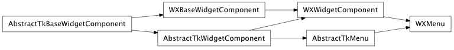

Enter search terms or a module, class or function name.
Bases: enaml.components.widget_component.WidgetComponent
A declarative Enaml Component which represents a menu in a menu bar.
The title of the menu as displayed by a MenuBar
An event emitted when the menu is about to be shown.
An event emitted when the menu is about to be hidden.
A read-only cached property which holds the list of menu contents which are instances of Menu or Action.
Overridden parent class trait
Create and show the menu as context or popup menu.
If the menu has not been initialized when this method is called, it will be setup and initialized automatically.
| Parameters: |
|
|---|
alias of __NoInterface__

Bases: enaml.backends.qt.qt_widget_component.QtWidgetComponent, enaml.components.menu.AbstractTkMenu
A Qt4 implementation of Menu.
The change handler for the ‘title’ attribute on the shell object.
The change handler for the ‘contents’ attribute on the shell object.

Bases: enaml.backends.wx.wx_widget_component.WXWidgetComponent, enaml.components.menu.AbstractTkMenu
A Wx implementation of Menu.
The change handler for the ‘title’ attribute on the shell object.
The change handler for the ‘contents’ attribute on the shell object.
An overridden parent class method. A wxMenu cannot change its visibility.
An overridden parent class method. A wxMenu cannot change its bgcolor.